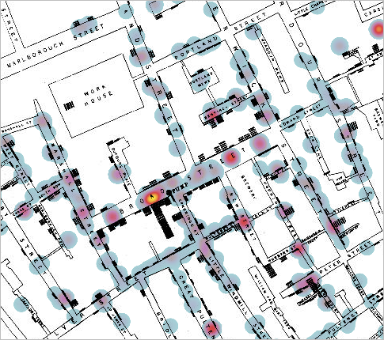

Fall 2022 Harvard Map Collection
GIS definitions

What is GIS used for?

John Snow cholera map, 1854.

John Snow cholera map, overlaid by a modern-day GIS heatmap layer.
GIS data layers


GIS data layers diagram.
 OldNYC: Mapping Historic Photographs at the NYPL
.
OldNYC: Mapping Historic Photographs at the NYPL
.
Property research with GIS
 Belle’s house in college.
Belle’s house in college.
 City of Boston Archives Reading Room.
City of Boston Archives Reading Room.
 19th century insurance atlas, open to a plate of downtown Boston.
19th century insurance atlas, open to a plate of downtown Boston.
Microfilm reader.
Milwaukee probate records on mircofilm.
Probate record loaded onto the microfilm reader.
Text from one of the Milwaukee probate records.
 Modern-day parcels in Milwaukee.
Modern-day parcels in Milwaukee.
GIS support from the library
 A student in the social sciences studying race and policy who had never used GIS before learned how to create demographic maps at the library.
A student in the social sciences studying race and policy who had never used GIS before learned how to create demographic maps at the library.
 Non-GIS map for an English class a student consulted us on.
Non-GIS map for an English class a student consulted us on.
maps@harvard.edu
You can contact us at maps@harvard.edu .